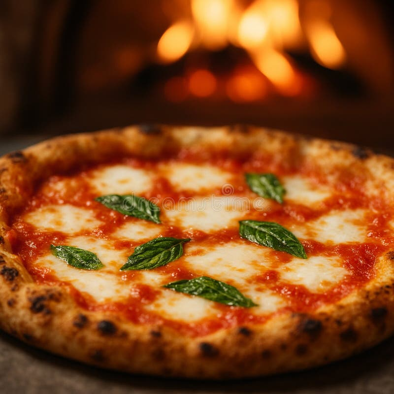
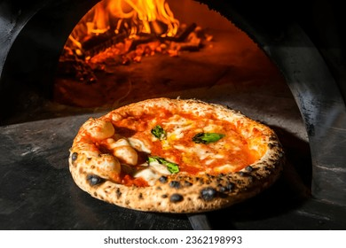
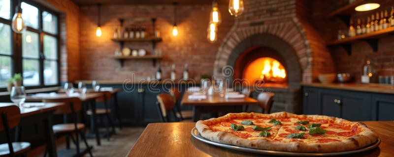

Impasto artigianale
Lievitazione naturale di 48 ore per una pizza leggera e digeribile.
Impasto a lunga lievitazione, ingredienti freschi e forno a legna: la vera pizza napoletana nel cuore di Milano.

Lievitazione naturale di 48 ore per una pizza leggera e digeribile.

Cottura a 450°C in soli 90 secondi, come da tradizione napoletana.

Una sala calda e familiare, perfetta per cene tra amici e in famiglia.
Siamo aperti tutti i giorni, anche per asporto.
Orari e contatti